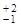
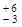
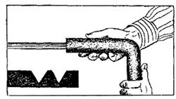
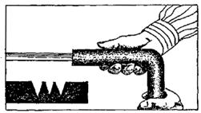
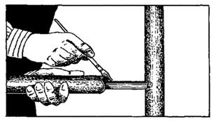
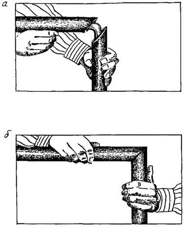
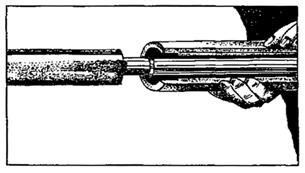

ДЕПАРТАМЕНТ СТРОИТЕЛЬСТВА
НАУЧНО-ТЕХНИЧЕСКОЕ
УПРАВЛЕНИЕ
МОССТРОЙЛИЦЕНЗИЯ
ВЕДОМСТВЕННЫЕ
СТРОИТЕЛЬНЫЕ НОРМЫ
ИНСТРУКЦИЯ
по применению
пенополиэтиленовых
оболочек для изоляции труб
ВСН 25-95
Москва - 1996
Инструкция по применению пенополиэтиленовых оболочек разработана НИИМосстроем Департамента строительства (зав. сектором изоляции к.т.н. Нейман А.Г., инж. Демидова В.А.) при участии Мосстройлицензии (Ю.И.Столяров, к.т.н. В.Д.Фельдман) и отдела сантехоборудования МНИИТЭПА (начальник С.И. Прижижецкий).
При составлении инструкции использован накопленный с 1992 г. опыт работы Хорошевского, Даниловского, Калибровского кабиностроительного завода.
При разработке настоящих ВСН использовано "Руководство с поэтапным описанием установки пластин и изоляции для труб Армафлекс и изоляции для труб Туболит фирмы Армстронг (Armstrong-Германия).
|
Департамент строительства |
Ведомственные строительные нормы |
ВСН 25-95 |
|
Научно-техническое управление |
Инструкция по применению пенополиэтиленовых оболочек для изоляции труб |
Положения настоящей инструкции распространяются на производство работ по тепловой изоляции стальных труб и подводок систем холодного и горячего водоснабжения с температурой подаваемой воды до 10-20° или 60-70°С. В первую очередь пенополиэтиленовые оболочки "Плот" по ТУ 2291-002-03989419-94 предназначаются для подводок сантехкабин и стояков. Трубы с указанной изоляцией прокладываются в технических подпольях и коридорах, коллекторах и каналах г.Москвы и области. Предельная температура теплоносителя на длительный период - не свыше 75°С, кратковременно (не свыше 2 ч) до 90°С. Типоразмеры и показатели оболочек "Плот" должны соответствовать требованиям ТУ 2291-002-03989419-94, внутренний диаметр оболочки выбирается в соответствии с диаметром изолируемой трубы согласно таблице 1.
Изолируемые трубы не должны иметь следов грязи, масел, окалины и продуктов коррозии, при необходимости они должны быть очищены. Дополнительное антикоррозионное покрытие не наносится, так как оболочка обладает защитными свойствами. Выбор толщины оболочки для конкретных объектов осуществляется согласно таблице 2, с увеличением диаметра изолируемых труб и температуры подаваемой воды толщина слоя изоляции увеличивается.
|
Внесены |
Утверждены: "15" декабря 1995 г. |
Срок введения в действие "1" января 1996 г. |
2.1. Пенополиэтиленовые легкие оболочки для труб "Плот" должны соответствовать требованиям технических условий ТУ 2291-002-03989419 и изготавливаться из полиэтилена низкой плотности высокого давления по ГОСТ 16337-77*Е и других компонентов согласно регламенту.
2.2. Рекомендуется использовать пенополиэтиленовые оболочки с объемной массой не более 60 кг/м3, имеющие равномерную мелкоячеистую структуру в основном с замкнутыми порами, прочностью на растяжение не менее 1,0 кгс/см2, водопоглощением по объему не более 3%, предельной растяжимостью - не менее 100%, длительной теплостойкостью (при выдержке 1750 ч) не менее 75°С и коэффициентом теплопроводности в пределах 0,035-0,050 ВТ/М°К.
2.3. Для изоляции трубных подводок сантехкабин холодного и горячего водоснабжения рекомендуется использовать оболочки "Плот", представленные в таблице 1.
Таблица 1
|
Рекомендуемый внутренний диаметр оболочек |
|||||
|
условный дм |
проход мм |
наружный диаметр мм |
круглых |
гофрированных |
|
|
1 |
25 |
33,7 |
38±3 |
38±2 |
|
|
11/4 |
32 |
38,0 |
46±4 |
48 |
+2 |
|
-5 |
|||||
|
11/2 |
40 |
44,5 |
55±4 |
55 |
+3 |
|
-6 |
|||||
Оболочки должны иметь ровную сплошную поверхность без трещин, борозд и порывов. Рекомендуемая толщина стенки оболочки для труб горячего водоснабжения не менее 20±2 мм, для труб холодного водоснабжения 10±2 мм (допускается и в этом случае 20±2 мм).
2.4. При использовании гофрированных оболочек рекомендуется, чтобы число гофр составляло 7 - 12 шт., их высота 3 - 10 мм.
Использование гофрированных оболочек позволяет снизить на 10 - 20% материалоемкость и на 10 - 15% улучшить теплозащитные показатели.
2.5. Пенополиэтиленовые оболочки целесообразно применять для изоляции стальных труб малых и средних диаметров от 15 до 110 мм. Внутренние диаметры пенополиэтиленовых оболочек и толщины изоляции должны соответствовать указанным в табл.2*.
Таблица 2
|
Внутренний диаметр оболочек/толщина |
||||||
|
проход внутр. дм |
наружн. мм |
холодное водоснабжение |
горячее водоснабжение |
|||
|
1/4 |
15,0 |
16/5 |
16/10 |
16/15 |
- |
- |
|
3/8 |
17,2 |
20/5 |
20/10 |
20/15 |
20/20 |
20/30 |
|
1/2 |
21,3 |
24/5 |
24/10 |
24/15 |
24/20 |
24/30 |
|
3/4 |
26,9 |
30/5 |
30/10 |
31/15 |
31/20 |
31/30 |
|
1,0 |
33,7 |
37/5 |
37/10 |
38/15 |
38/20 |
38/30 |
|
1 1/4 |
38,0 |
- |
46/10 |
46/15 |
46/20 |
46/30 |
|
1 1/2 |
44,5 |
- |
50/10 |
50/15 |
50/20 |
50/30 |
|
2,0 |
60,3 |
- |
64/10 |
64/15 |
64/20 |
64/30 |
|
2 1/2 |
76,1 |
- |
72/10 |
72/15 |
72/20 |
72/30 |
|
3,0 |
88,9 |
- |
94/10 |
94/15 |
94/20 |
94/30 |
|
3 1/2 |
102 |
- |
- |
108/15 |
108/20 |
108/30 |
|
4,0 |
110 |
- |
- |
120/15 |
120/20 |
120/30 |
*Оболочки по табл.2 серийно не выпускаются, хотя технические возможности их изготовления имеются, их применение будет осуществляться по заказам.
2.6. Для изоляции стальных труб
по табл. 2
отклонения размеров (диаметров) оболочек от номинальных должны находиться в
пределах от  
2.7. Московской фирмой "Полимерпласт" предлагается пенополиэтиленовый листовой материал "Вилатерм-Л", удовлетворяющий требованиям ТУ 6-00-00203387-34-94. Толщина листа варьируется в пределах 1-10 мм, ширина листа от 600 до 1000 мм, водопоглощение - не более 1%, теплопроводность 0,042 Вт/м°К, плотность (расчетная) 100±20 кг/м3. Материал пригоден для изоляции труб различных диаметров и цилиндрических объектов в качестве звуко- и теплоизолирующих прокладок для пола под линолеум, паркетную доску (для замены оргалита), для тепло-, звукоизоляции стен, утепления дверей и т.д. Листовой пенополиэтилен поставляется в виде рулонов с длиной полотнищ порядка 10-20 м.
2.8. Оболочки "Плот" поставляются в виде связанных бечевой в 2-3 местах пучков массой 20-30 кг, длина оболочек до 3,0 м. Пенополиэтиленовые оболочки безопасны в санитарно-гигиеническом отношении, они относятся к сгораемым, а при введении специальных добавок к трудносгораемым материалам.
2.9. Пенополиэтиленовые оболочки выпускаются в настоящее время в виде полых неразрезанных цилиндров. По длине оболочки (в различных сечениях) отклонения диаметров не должны превышать ±2 мм для малых диаметров и ±4 мм для больших диаметров. Возможно изготовление разрезанных по образующей оболочек, надеваемых на трубу сбоку.
2.10. Конструкция изолированных трубных подводок состоит из металлической трубы и полиэтиленовой оболочки требуемой толщины. Оболочка должна надеваться на трубу с торца с легким усилием, но без растяжения оболочки, зазоры между металлической трубой и оболочкой должны быть минимальными, не свыше 1-3 мм.
2.11. Пенополиэтиленовые оболочки обладают эластичностью, хорошими теплозащитными свойствами, близкими к пенополиуретану, относительной доступностью и дешевизной по сравнению с последним, полной водостойкостью, сантехнической безопасностью, малой трудоемкостью нанесения, значительными звукоизолирующими и шумопонижающими свойствами, хорошими электроизолирующими свойствами.
3.1. На трубы малых диаметров (до 15-45 мм) и небольшой длины рекомендуется надевать с торца неразрезанную оболочку вращательным движением (рис. 1). При использовании оболочек с внутренними гофрами для теплоизоляции труб при вращательном движении происходит пригибание верхушек гофр с образованием условно-замкнутых ячеек, улучшающих теплоизоляцию; оболочки легче надевать на трубы и они прочнее держатся.
3.2. При плотном контакте оболочки с трубой (зазор менее 1 мм) оболочки можно не закреплять. При свободном расположении оболочки на трубе рекомендуется закреплять их оборачиванием (и затягиванием до контакта оболочки с трубой) проволокой толщиной 0,5-1,5 мм через каждые 0,5 м по длине и у краев трубы, или оборачивать бандажами из тонкой жести. Затяжка проволокой должна обеспечить соприкосновение оболочки с поверхностью при уплотнении оболочки не более чем до 2 мм от наружной поверхности.
3.3. Для длинных трубопроводов и труб диаметром более 45-60 мм и при наличии отводов рекомендуется использовать оболочки, разрезанные по образующей, которые надевают на трубу с последующим соединением швов (рис. 2). Соединение швов возможно осуществить после проклейки клеем (полиизобутиленовым, эпоксидным, жидким стеклом и т.п.) либо с установкой зажимов на разрезанной оболочке через каждые 20-30 см.
Целесообразно также использование зажимов до высыхания и затвердевания клея с последующим их снятием.
3.4. Допускается закрепление краев разрезанных оболочек проволокой диаметром 0,5-1,5 мм или бандажами из тонкой жести через 0,2-0,3 мм и у краев (торцов) оболочки. Ширина зазора разрезанных оболочек должна быть минимальной, не более 0,5 мм.
При излишней ширине оболочки допускается ее установка с нахлестом разрезанных концов друг на друга и закреплением верхнего слоя оболочки зажимами. Допускается в отдельных случаях при недостаточной ширине оболочки использование дополнительной вырезанной полосы оболочки, закрепляемой теми же способами. Не допускается оставление неизолированной трубной поверхности после нанесения оболочки
Рис. 1. Надевание изоляционной оболочки на трубу вращательным движением с одновременным поджатием гофр
Рис. 2 (а, б). Изоляционную оболочку, разрезанную по образующей, раздвигают по разрезу и одевают на трубу с последующим соединением швов;
а - соединение швов с помощью клея; б - соединение швов с помощью зажимов
3.5. фасонные элементы трубных подводок, углы поворотов, отводы, соединения, должны быть изолированы пенополиэтиленовыми оболочками без пропусков и непокрытых участков, без складок изоляции и неплотностей. Толщина изоляции должна быть такой же, что и на линейных участках труб.
3.6. Изоляция углов поворота трубопроводов производится следующим образом. Оболочку примеряют и отмечают место углов поворота, затем ее устанавливают в форму-стусло и специальным ножом делают вырезы, образующие требуемые углы 45° или 30°, а в сумме 90°, после чего оболочки надевают на трубу и ее колена (рис. 3). Оболочки расправляют, места надрезов закрепляют зажимами и (или) проклеивают, после схватывания клея зажимы могут быть удалены. При наличии дефектов и неплотностей на углах можно делать вставку из вырезанного пенополиэтилена и закрепить ее липкой лентой.
3.7. Остроугольный угол поворота труб изолируется с применением оболочек, надрезанных под углом 45° с помощью стусла, затем оболочки надевают в заданном положении с двух сторон и плотно соединяют, после чего закрепляют клеем или зажимами.
3.8. Изоляцию отвода (Т-образного узла) делают с подрезкой оболочки, надеваемой на отвод, по форме изоляции поверхности основной трубы с плотным надеванием вырезанного полукруга до соприкосновения с поверхностью оболочки основной трубы и установкой зажимов в месте соединения (рис. 4 а, б).
3.9. Муфтовые резьбовые соединения труб с выступающей металлической муфтой изолируют оболочкой, в которой предварительно делают внутренний вырез. Затем оболочку устанавливают на трубу и склеивают или закрепляют с помощью зажимов (проволоки, бандажей) (рис. 6 а, б).
Рис. 3 а. Для изоляции углов поворота 45° и 30° используют стандартную угловую матрицу (стусло), с помощью которой специальными разрезными ножами делают срезы на оболочке, образующие утлы 45° и 30°

Рис. 3 б. Установка оболочек с вырезанными углами (2´45°) на колено. Надрезы проклеивают и сжимают или закрепляют с помощью зажимов

Рис. 3 в. Установка оболочек с вырезанными углами (3´30°) на колено. Срезы проклеивают и сжимают или закрепляют с помощью зажимов
Рис. 4 а. Изоляция Т-образного узла с отверстием. У стыкуемой оболочки вырезают полукруглое отверстие, соответствующее форме поверхности стыка трубы

Рис. 4 б. Стыкуемую оболочку с вырезанным полукругом надевают на отвод трубы, поверхность стыка проклеивают и соединяют со стыкующейся поверхностью оболочки

Рис. 5 (а, б). Для изоляции углов поворота 45°, с помощью стандартной угловой матрицы (стусла) и специальных разрезных ножей разрезают оболочку под углом 45°, надевают с двух сторон на колено, стыки проклеивают и плотно сжимают или скрепляют с помощью зажимов:
а - установка изоляции на трубу, нанесение клея на стыки;
б - сжатие стыков после подсушки клея
Для скрепления краев разрезанной оболочки можно использовать специальные металлические или пластмассовые скобы-зажимы с загнутыми вверх концами или снабженные зазубринами (рис. 7 а, б).
3.10. Для удержания и подвески изолированных труб, в частности горячего водоснабжения, рекомендуется использовать с целью снижения теплопотерь специальные широкие бандажи (по длине не менее 8-10 см) с прикрепленными к ним тягами из металла диаметром 5 мм или более, закрепляемыми к потолкам или выступающим деталям зданий.
Так как бандажи устанавливаются на слой изоляции, а не крепятся к металлу труб, способ не дает излишних теплопотерь.
В этом случае следует избегать излишнего сжатия и деформации пенополиэтиленовой изоляции путем увеличения поверхности соприкосновения или установки дополнительной пенополиэтиленовой оболочки.
3.11. Трубы больших диаметров и сосуды цилиндрической формы можно изолировать с применением плоских лент, наматываемых под углом с нахлестом с таким расчетом, чтобы получить требуемую толщину изоляции. Рулонный материал предварительно нарезают на полосы шириной 20-25 см, нахлест полос друг на друга должен быть не менее 4-5 см. Намотка может проводиться как вручную, так и с применением намоточных устройств. Слои изоляции могут закрепляться приклеиванием или фиксацией бандажами, проволочными скрутками диаметром 0,5-2 мм или клеящей лентой. Закрепление следует проводить через каждые 30-50 см и на концах изолируемых трубных заготовок. Целесообразно использовать ленты с толщиной, равной требуемой толщине пенополиэтиленовой изоляции.
Возможно использовать ленты с гофрированной поверхностью, создающие технологические пустоты, которые улучшают теплозащиту без увеличения материалоемкости.
Толщина изоляции всех фасонных участков должна быть не меньше, чем линейных участков.
Рис. 6 а. Изоляция муфтового соединения. На оболочке делают внутренний вырез, облегающий муфту

Рис. 6 б. Вырезанную оболочку устанавливают на трубу и склеивают со всех сторон или скрепляют с помощью зажимов
Рис. 7. Скобы-зажимы для соединения на трубах краев разрезанных оболочек:
а - металлические скобы;
б - пластмассовая скоба-зажим
3.12. Пенополиэтиленовые оболочки и ленты возможно использовать для изоляции труб с высокой температурой теплоносителя в комбинации с первичным слоем теплостойкой минеральной теплоизоляции. При повышенных требованиях к огнестойкости изоляции можно использовать Пенополиэтиленовые оболочки с несгораемым минеральным теплоизоляционным или защитным покрытием.
4.1. Пенополиэтиленовые оболочки следует отпускать заказчикам после завершения процесса стабилизации их размеров не ранее чем через 7 сут. после изготовления.
Транспортировка оболочек возможна любым видом транспорта с помещением их в чистые емкости без следов сажи, копоти, химикатов и других загрязнений.
При централизованных поставках оболочек автотранспортом, учитывая их легкость, рекомендуется использовать автомашины с прицепами и наращенными бортами.
4.2. При хранении оболочек последние должны быть защищены от действия прямых солнечных лучей, систематического попадания дождя и снега, попадания пыли и грязи. Площадка должна иметь водоотвод. Изделия должны храниться по секциям отдельно по диаметрам и типоразмерам.
4.3. При погрузке и выгрузке следует избегать порчи и загрязнения оболочек. Не допускается протаскивание оболочек волоком по земле и их сбрасывание.
При выполнении погрузочно-разгрузочных работ следует руководствоваться требованиями ГОСТ 12.3.009-76*.
5.1. Пенополиэтиленовые оболочки рекомендуются для теплоизоляции стальных оцинкованных труб (ГОСТ 3262-75*), стальных труб (ГОСТ 10704-91, ГОСТ 8732-78* и ГОСТ 8734-75*). Незащищенные трубы и места сварных и резьбовых соединений должны быть покрыты лаком БТ-177 (ГОСТ 2084-77*) с введением алюминиевой пудры или иметь иное стандартное окрасочное покрытие.
5.2. При повышенной пожароопасности по согласованию с заказчиком при применении оболочек в чердачных и подпольных помещениях зданий следует получить положительное заключение органов пожарного надзора.
5.3. В состав документации, предъявляемой строительно-монтажной организацией, включают заводские паспорта на пенополиэтиленовую теплоизоляцию, указывающие толщину изоляции и ее характеристики.
5.4. Гарантийный срок хранения оболочек "Плот" - один год с момента изготовления при условии соблюдения правил транспортировки и хранения. Гарантийный срок эксплуатации установленных на трубопроводы оболочек в условиях внутри зданий и помещений - не менее 10 лет с момента применения.
6.1. При хранении и применении пенополиэтиленовых оболочек "Плот" следует выполнять общие требования пожарной безопасности и промышленной санитарии по СНиП III-4-80* "Техника безопасности в строительстве". Оболочки не взрывоопасны и безопасны в санитарно-гигиеническом отношении.
6.2. Оболочки относятся к сгораемым материалам, горят при непосредственном контакте с огнем. Следует предотвращать близкое соседство оболочек с открытым пламенем, попадание искр от электросварки. В качестве средств пожаротушения могут быть использованы огнетушители всех марок, песок, вода, асбестовое и брезентовое полотно.
СОДЕРЖАНИЕ
|
3. Способы нанесения и закрепления пенополиэтиленовой изоляции. 3 4. Транспортировка и хранение пенополиэтиленовых оболочек. 7 |